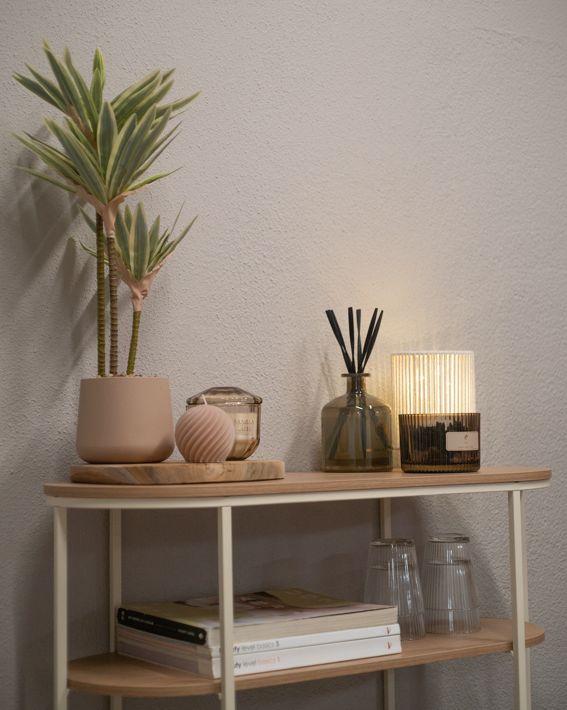

Toe aan een nieuw kapsel, een frisse coupe of gewoon even tijd voor jezelf? Bij Kapsalon Pr8tig, de kapsalon van Kr8tig in Weert, ben je welkom voor verschillende haarbehandelingen in een ontspannen en persoonlijke omgeving.
Jouw haar in goede handen
Of je nu komt voor knippen, kleuren of een andere haarbehandeling: we nemen de tijd om samen te kijken naar jouw wensen.
Bij Kapsalon Pr8tig kun je onder andere terecht voor:
- Knippen en stylen
- Wassen en föhnen
- Kleuren
- Verzorgende haarbehandelingen
- Andere behandelingen in overleg
Zo bieden we haarverzorging tegen een aantrekkelijke prijs én een plek waar deelnemers het kappersvak in de praktijk kunnen ervaren.
Leren met echte klanten
Voor onze deelnemers is Kapsalon Pr8tig een praktijkgerichte omgeving waarin zij hun talenten en interesses kunnen ontdekken. Onder begeleiding maken zij kennis met verschillende werkzaamheden binnen het kappersvak en doen zij ervaring op met echte klanten.
Daarbij gaat het om meer dan alleen het kappersvak. Deelnemers ontwikkelen ook vaardigheden op het gebied van gastvrijheid, klantcontact, samenwerken, zorgvuldig werken en verantwoordelijkheid nemen.
Juist het contact met echte klanten maakt deze ervaring waardevol. Met jouw bezoek krijg jij de aandacht die jouw haar verdient en bied je deelnemers tegelijkertijd de kans om mee te doen, nieuwe vaardigheden te ontwikkelen en vertrouwen op te bouwen in wat zij kunnen.
Maak een afspraak bij Kapsalon Pr8tig
Toe aan een nieuw kapsel of benieuwd naar de mogelijkheden? Neem gerust contact met ons op voor een afspraak of meer informatie.
Je vindt Kapsalon Pr8tig bij Kr8tig aan de Parallelweg 168 in Weert.
Voor afspraken of informatie kun je contact opnemen via d.tangestani@kr8tig.nl.
Openingstijden: maandag t/m vrijdag van 09.00 tot 16.00 uur.